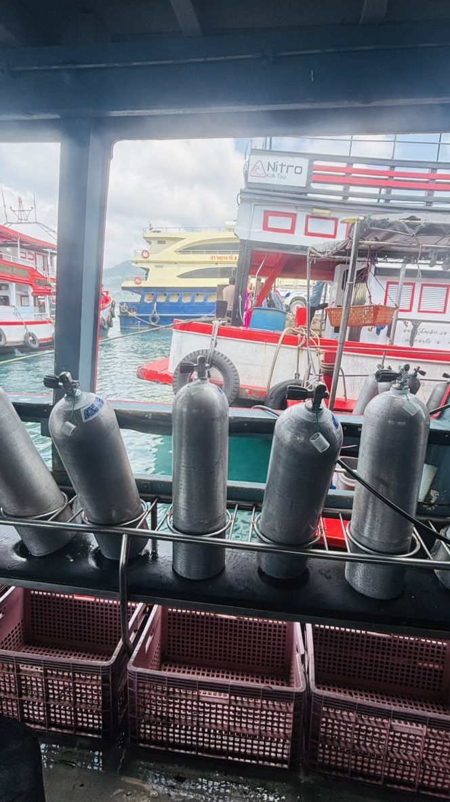

I'd been thinking about getting my Open Water certification for two years. I never did it because I kept waiting for someone to do it with.
Eventually I stopped waiting. I booked a dive school on a Thai island, got on the boat alone, and figured out the rest when I got there. That's the pattern, by this point. It's the only one that works.

The morning of the second open-water dive. I took this photo before we left the pier. I wanted to remember what the before felt like.
What the Open Water course actually involves
Four days. Two days of classroom work and pool sessions, two days of actual open-water dives. You learn to equalize your ears as you descend — this takes some people longer than others, don't panic if it takes you a few attempts. You learn to clear your mask underwater when it floods, how to do a controlled emergency ascent, how to breathe through the regulator without hyperventilating.
You also learn buoyancy, which turns out to be the actual skill that separates a stressful dive from a good one. Getting neutral in the water — neither sinking toward the reef nor floating up toward the surface, just suspended — is what you're really working on. Once you have it, diving becomes effortless. Before you have it, you're fighting the water the whole time.
What nobody told me
The briefing before your first open-water dive is slightly alarming. They go through all the things that can go wrong and what to do when they do. If you're someone who catastrophizes — and I am, quietly — this part requires some internal management. The rational answer is that the briefing exists because these situations are rare and manageable, not because they're likely. The less rational part of your brain needs a minute to accept this.
What also nobody told me: the moment you go below the surface and breathe out and the world goes quiet is unlike anything else I've experienced. You're breathing underwater. The sound is just your own breath and the bubbles rising past you. Everything above the surface — noise, plans, the phone, the to-do list — disappears completely. It's the most present I've been in years.
I got certified on day four. Went on two more fun dives the next day because I didn't want to stop.
Doing it solo: what that's actually like
Every course I've seen on islands like Koh Tao has other solo travellers in it. I'm not the only one who waited too long for a dive buddy who was never coming. In my group there was a German woman who'd been travelling alone for six months and a Canadian who'd been talking about getting certified for three years and finally just booked it without telling anyone.
The dive school environment is inherently social — you're doing something new and slightly nerve-wracking together, which creates connection quickly. By day two I had people to eat dinner with, which is often the actual challenge of solo travel, not the activity itself.
The other thing about solo diving that nobody mentions: you get to go at your own pace. Nobody is pulling you along to the next dive site because they're bored. Nobody is rushing the debrief. You stay as long as you want with the fish.
Practical things to know before you book
- Open Water takes four days. Budget for this — don't try to squeeze it into a long weekend.
- PADI and SSI are the two main certification bodies. Both are internationally recognised. Shop around on price and read reviews of the specific school, not just the certification.
- You'll need to complete a medical form. If you have any ear, sinus, heart, or lung conditions, check with a doctor first.
- The certification is yours permanently. Once you have it, you can dive anywhere in the world up to 18 metres.
- Advanced Open Water (the next level) can be done immediately after — some people do both back to back. I waited, but in hindsight I'd have done both while already there.
- Seasickness is real on dive boats. If you're prone to it, take medication the night before.
The tanks in the photo are from the morning of the second open-water dive. I remember sitting on the pier looking at them, running through the briefing in my head, slightly nervous. I took the photo because I wanted to remember the before.
The selfie at the top is the after-before — already on the boat, gear on, the nerves already turning into something more like excitement. That's the window you're aiming for.